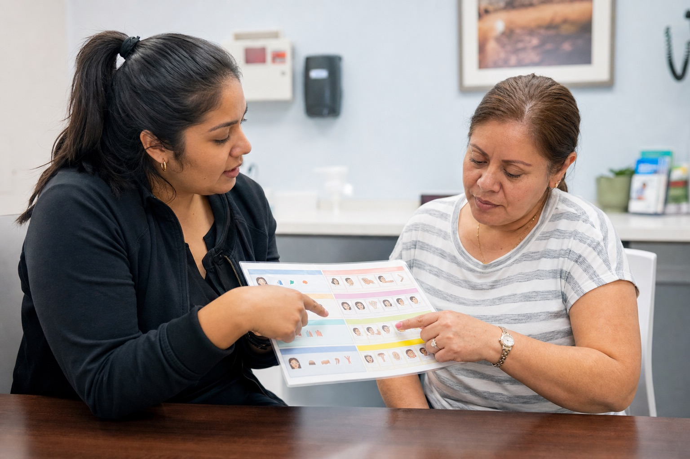
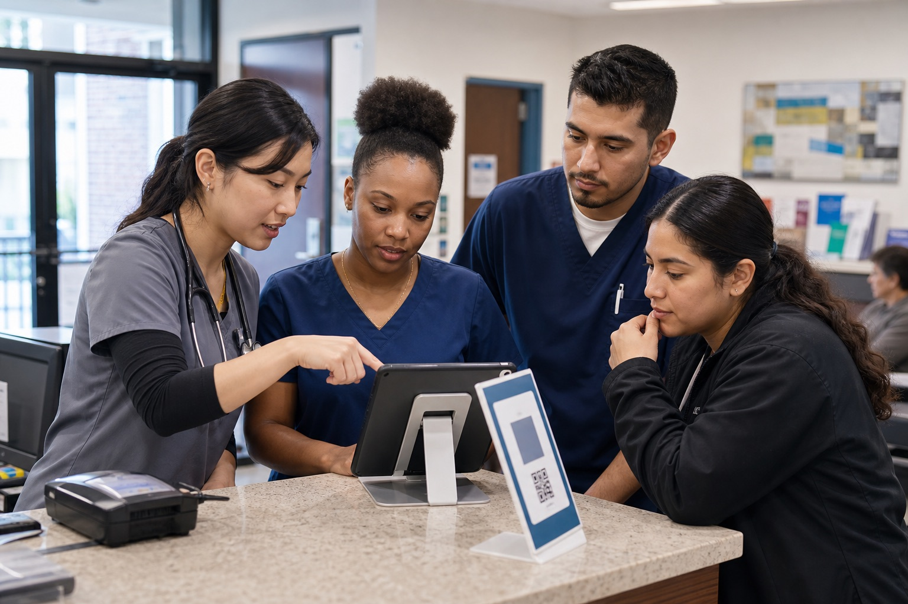

Structural Inequality
Language barriers become unequal when healthcare systems are built around English-speaking patients and multilingual support is treated like an extra service instead of a basic need.
Fiona Zhuo | SOC310 Community Advocacy Campaign
A community advocacy campaign for safer, more equitable healthcare communication in Flushing, Queens.
View Campaign StrategyClear communication is part of safe care.
The Issue
Language barriers in healthcare are not just an inconvenience. They can affect patient safety, access to care, trust in providers, and the quality of treatment patients receive. In urgent care and clinic settings, patients with limited English proficiency may struggle to describe symptoms, understand medication instructions, ask questions, or give informed consent.
I chose this issue because I have personally seen it while working as a medical assistant at an urgent care clinic in Flushing. Many patients at the clinic are Chinese or Hispanic, but many providers on shift do not speak Mandarin or Spanish. I have had to step in as an informal interpreter many times, especially between Mandarin and English, so patients can explain symptoms and understand treatment.
This help is useful in the moment, but it is not always enough. Elderly Chinese patients may speak different dialects that I cannot interpret, and Spanish-speaking patients can face similar problems when no staff member is available to communicate clearly. These gaps can delay care, create misunderstandings, and affect patient outcomes.
The issue is caused by a mismatch between the language needs of the community and the systems clinics use to communicate. When medical offices do not have enough trained interpreters, translated materials, or clear language-access routines, racial and ethnic minority patients can face worse care even when they are seeking the same services as English-speaking patients.
Why It Matters in Flushing
Flushing is one of the most linguistically diverse communities in New York City. Many residents are immigrants, children of immigrants, or multilingual family members helping relatives navigate healthcare. In real clinic situations, patients may rely on family members, medical assistants, front-desk staff, or quick phone translation instead of trained medical interpretation.
Informal interpretation can help in the moment, but it can also be incomplete or unsafe. Family members may not know medical terms, may leave out sensitive information, or may feel uncomfortable translating personal health details. This creates unequal conditions for patients who already face barriers connected to race, ethnicity, immigration status, income, age, and healthcare access.
Patient-provider dynamics can also be shaped by social perceptions. For example, some patients may request providers from a certain racial or ethnic background, which reflects underlying bias and can make care delivery more complicated. This shows that language access is connected to broader racial and ethnic relations, not just translation.
Sociological Lens
The theoretical foundation for this campaign is that inequality is not only about individual choices. It is also shaped by institutions, policies, and everyday routines that decide whose needs are treated as normal and whose needs are treated as extra.
Language barriers become unequal when healthcare systems are built around English-speaking patients and multilingual support is treated like an extra service instead of a basic need.
Patients with limited English proficiency may experience reduced access, lower satisfaction, delayed care, weaker follow-up, or instructions they cannot fully use at home.
A patient may face language barriers along with race, ethnicity, immigration status, socioeconomic position, age, gender, disability, or insurance barriers. These experiences can overlap.
When institutions repeatedly fail to meet the needs of racial and ethnic minority communities, unequal outcomes can continue even without individual prejudice.
Campaign Goals
Campaign Strategy

Simple phrase sheets at check-in desks and exam rooms would include common medical questions, pain descriptions, consent language, and instructions in English, Mandarin, Spanish, and other needed languages.
Why it helps: Staff can quickly point to basic phrases while waiting for a trained interpreter or translation tool.

A clearly marked tablet or QR code station would connect patients to approved translation resources, language preference forms, and clinic instructions.
Why it helps: Patients and staff would know where to start instead of improvising during stressful moments.
A short checklist would remind staff to ask for language preference, avoid using children as interpreters, confirm understanding, and document translation needs.
Why it helps: It turns language access into a normal part of care instead of something handled only after a problem happens.
To make this campaign work, the clinic would need translation software or apps, basic design tools to create multilingual materials, and support from clinic leadership to add these tools into the daily workflow. Feedback from both staff and patients would help improve the system over time.
Target Audience
The primary audience is medical staff, clinic managers, and students entering healthcare because they directly affect patient communication and clinical decision-making. Patients and families are also included because their feedback can show whether the tools are actually useful.
Evidence and Research
The campaign is evidence-based because it focuses on practical language access supports that research connects to safer communication, better patient understanding, and more equitable care. Al Shamsi et al. (2020) connect language barriers to problems such as reduced quality of care, misdiagnosis, lower patient understanding, and increased risk of medical errors. Karliner et al. (2017) support evidence-based approaches such as interpreter services and structured communication support. Local sources from NYC and Queens also show that language access is a real policy and community issue, not just an individual communication problem.
Reflection and Expected Impact
This campaign is small-scale, but that is part of why it is realistic. A clinic does not need a huge budget to begin treating language access as part of patient safety and racial justice. Phrase sheets, translation stations, and communication checklists could improve daily interactions and help patients feel safer, respected, and understood.
The bigger impact is cultural. If staff and students learn to see language access as an equity issue, they may be more likely to notice whose needs are being missed and push for better systems in the future. For me, this project connects classroom concepts to real clinical situations I have seen in my own community.
AI Use Statement
AI was used as a support tool to help organize the website structure, improve clarity, and format the campaign materials. The topic, personal experience, campaign idea, and final review were completed by Fiona Zhuo.
Works Cited / Sources